Wild boar
Sanglier
| Latin name | Sus scrofa |
|---|---|
| Family | Meat & poultry |
| Origin | Eurasia |
| Season (France) | October – February |
| Flavour | Meaty · Earthy · Rich · Musky |
| Typical price (France) | 14–25 €/kg |
What it is
The ancestor of every domestic pig, and the animal Obelix hunts — the joke lands in France because boar really was the meat of Gaul. Its diet of acorns and roots gives the fat a nutty, forest note domestic pork lost centuries ago.
In the kitchen
Marinate it overnight in red wine with juniper and bay. Young boar needs less; an old one needs two days.
Goes with
Juniper berry Red wine vinegar Chestnut Bay leaf Thyme Onion Carrot Dark chocolate
Same species
Andouillette Boudin blanc Natural casings Caul fat Chorizo Ciauscolo
Also used with
Bog myrtle Mugwort Wormwood Yerba maté Myrtle
In season alongside
Woodcock Hare Venison Figatellu Goose Lamprey
Something wrong here, or missing? Tell us